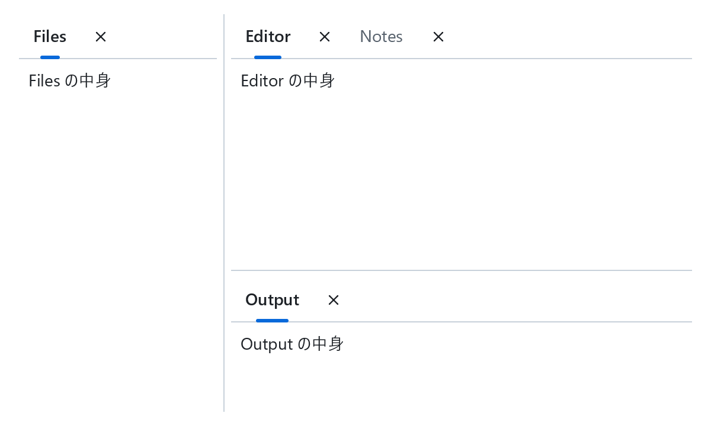
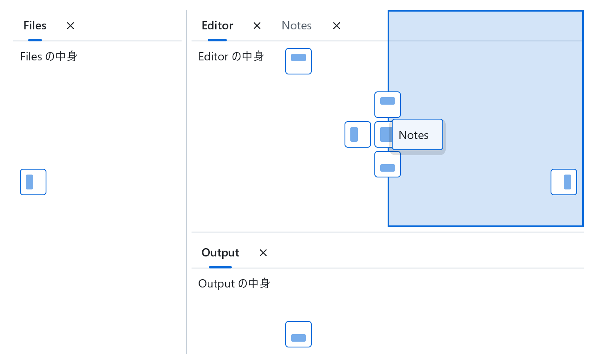
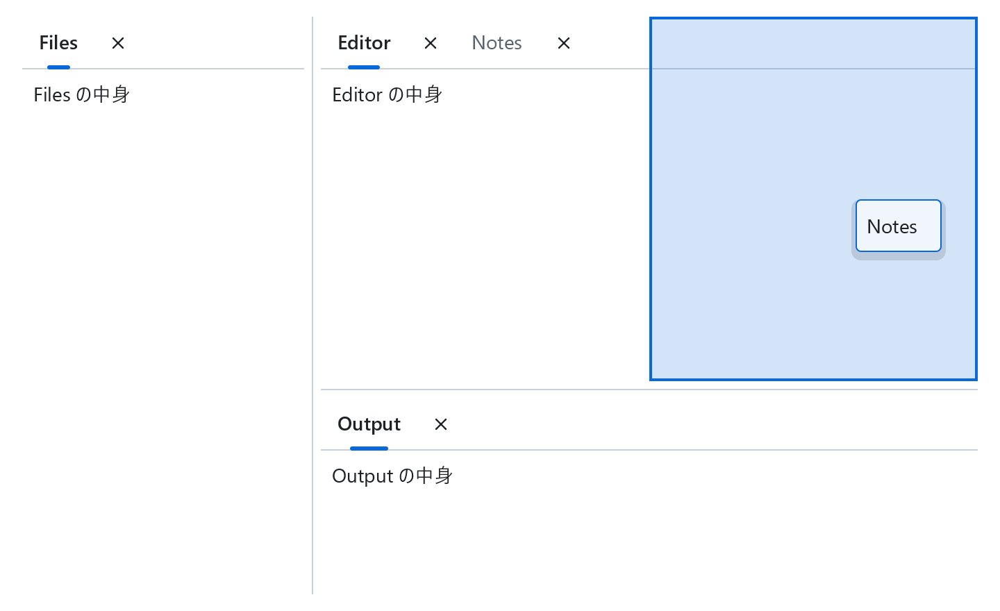

kargui 開発レポート ・ 第 12 章
ドッキング
0.4 の 1 つ目として、ドッキングを足しました。パネルをタブのまとまりに入れて並べ、利用者がタブを引っ張って並べ替えられる部品です。開発の道具のように、利用者が自分の使いやすい並べ方にするアプリに向いています。この章では、4 つの見本を調べて決めた形と、並べ方の木をアプリが持つ作りを紹介します。後半では、小さな的に落とす形で作ったところ、作者の手の確かめでうまく落とせなかったことと、記録を足して原因を確かめ、落とし方を変えたことを書きます。
この章で分かること
- 0.3.0 の後に、ドッキングを最初に作った理由
- 見本の 4 つ（Dear ImGui・egui_dock・Qt・Visual Studio の流れの AvalonDock）から学んだこと
- まとまりを番号ではなくパネルで指すと、編集で指す先がずれない理由
- マウスを使わずに、メニューとキーボードでパネルを動かす方法
- 小さな的を狙わせる形が、手の確かめでうまくいかなかった理由と、ポインターのいる場所で決める形
最初にドッキングを作った理由
0.3.0 の後に回した物は、ドッキング・Windows の題の帯の作り替え・トレイ・通知・ハイコントラスト・多言語・本物の Xorg・macOS でした。計画書の「ほかの部品の土台になる物を先にする」に従うと、大きな部品のドッキングが先で、アプリの仕組み（題の帯・トレイ・通知など）が後になります。ドッキングが使う土台（引っ張って落とす・複数の窓・仕切り・タブ）は、0.3.0 までにそろっていました。

ui.dock(&mut dock).grow().closable() で並べたパネル（600×360 の窓を試験台で 2 倍で撮った）。まとまりの間の線が仕切り。見本の 4 つから学んだこと
ドッキングを持つ 4 つを調べました。どれも「分割の木の葉がタブのまとまり」という形で、パネルはアプリが決めた名前で呼び、中身はアプリが毎フレーム描きます。違いが出たのは、次の所です。
| 考えたこと | 見本で分かったこと | kargui の選び方 |
|---|---|---|
| 木の持ち方 | egui_dock は配列の番号で親子を持つので、編集で番号がずれ、深さに応じて配列が大きくなる。落ちる不具合の報告もある | 入れ子の形の 2 分木。まとまりは、中のパネルで指す |
| 落とす先 | どれも、まとまりの 4 方向に分けるか、真ん中でタブにする。全体の外側の端もある | 同じ 9 か所。どこに落ちるかを薄く塗って見せる |
| 閉じる | egui_dock は、アプリが閉じるのを止められる | kargui は閉じたいパネルを知らせるだけで、外すかどうかはアプリが決める |
| キーボード | ライブラリの 4 つは、キーボードでパネルを動かせない。動かせるのは Visual Studio と VS Code のアプリだけ | タブのメニューとキーで、マウスと同じことができる |
| 別の窓に出す | どれも浮かせて出せる。OS の別の窓に出す物は、Wayland では窓の位置を読めず、出した窓の位置を戻せない | 2 段目に回す（Windows と X11 が先） |
書き方
並べ方は Dock<K> が持ちます。K はパネルを指すアプリの値で、例えば enum です。ui.dock(&mut dock) に毎フレーム同じ Dock を渡すと、kargui が利用者の操作に合わせて書き換えます。
let mut dock = Dock::new([Panel::Editor]);
dock.insert(Panel::Files, DockTo::Edge { side: DockSide::Left, share: 0.25 });
dock.insert(Panel::Output, DockTo::Split { of: Panel::Editor, side: DockSide::Bottom, share: 0.3 });
// 毎フレーム
if let Some(p) = ui.dock(&mut dock).grow().closable().show(title, |ui, p| { /* 中身 */ }) {
dock.remove(&p); // 閉じるボタンは知らせるだけ。外すかはアプリが決める
}まとまりは、番号ではなく中のパネルで指します（DockTo::Split { of: Panel::Editor, .. } は「Editor のいるまとまり」）。ほかのパネルが動いても、指す先は変わりません。空になったまとまりは消え、隣のまとまりがその広さを取ります。マウスで落とした時・メニュー・キーボードの 3 つとも、同じ Dock::insert を通ります。
並べ方は文字で保存し、次の起動で戻せます。知らない名前（アプリから無くなったパネル）は捨て、空になったまとまりは畳みます。
kargui-dock 1
split h 0.2500
tabs 0 1
panel Files
split v 0.7000
tabs 0 1
panel Editor
tabs 0 1
panel Outputマウスを使わない操作
見本の 4 つのライブラリには、キーボードでパネルを動かす手段がありませんでした。kargui では、タブの右クリックのメニュー（Shift+F10 でも開く）と次のキーで、マウスと同じことができます。読み上げソフトには、まとまりごとにタブの並び・タブ・タブの中身として伝わり、仕切りは位置を百分率で伝えます。
| キー | 働き |
|---|---|
| ←・→・Home・End（タブに焦点） | まとまりの中でタブを選ぶ |
| Ctrl+Tab・Ctrl+PageDown | 次のタブ（Shift か PageUp で前） |
| Ctrl+Shift+PageUp・PageDown | タブを前（後ろ）へ並べ替える |
| F6・Shift+F6 | 次（前）のまとまりのタブへ焦点を移す |
| Delete | 閉じる（.closable() の時） |
| メニュー | 新しいまとまりへ（左・右・上・下）、別のまとまりへ、閉じる |
最初の形: 小さな的に落とす
最初は、Dear ImGui や Visual Studio と同じく、引っ張っている間に小さな四角の的を出す形にしました。ポインターの下のまとまりの真ん中に 5 つ（タブにする・左・右・上・下に分ける）、全体の外側に 4 つです。的に乗ると、落ちる所を薄く塗ります。
作る途中で、試験台の絵を見て 3 つ直しました。閉じるボタンが枠付きで重く見えたので、ツールバーと同じく枠を描かない形にしました。外側の上の的は見出しの帯に重なって見出しを隠していたので、帯の下へずらしました。落ちる所の薄い塗りは、濃い青で埋まっていました。枠付きの四角を描く関数（boxed）は枠の色で外側を塗ってから内側を重ねるので、内側を半透明にすると枠の色が透けたためです。塗りと枠を別々に描くようにしました。
作者の手の確かめ: 的に 1 回も落とせなかった
見本の 23 ページ目「ドッキング」で、作者が手の確かめをしました。仕切り・Esc での取り消し・キー・メニュー・保存と読み戻し・閉じるは、記録の上で期待どおりでした。ところが、手順の「メモを、編集のまとまりの十字の右の的に落とす」と「出力を、全体の左の端の的に落とす」が、記録に 1 回もありませんでした。作者は 9 回引っ張り、1 回は Esc で取り消して、残りの 8 回はすべて見出しの帯の上（y=102〜110）で離していました。
引っ張っている間にポインターがどこを通ったかは、記録に残していませんでした。そのため、的が描かれていなかったのか、見つけにくかったのかを決められません。推測で直さず、2 つのことをしました。
- 見本と同じく、スクロールする入れ物の中のドッキングでタブを引っ張る試験を足し、変わった所だけ描いた絵と全部描き直した絵を比べた。1 画素も違わず、的は描けていた。
- 引っ張っている間、ポインターの下のまとまりと落とす先が変わるたびに 1 行残す記録（
dock.zone）を足し、作者に同じ 2 つの手順をもう一度頼んだ。
2 回目の記録で、原因が分かりました。
| 手順 | ポインターが通った所 | 結果 |
|---|---|---|
| メモを編集の右へ | 見出しの帯のすぐ下（y=150 まで）しか動かず、近くにあった外側の上の的に何度も乗った。十字の的（中身の真ん中）には届いていない | 1 回は外側の上の的で離し、メモが全体の上の端へ動いた |
| 出力を全体の左の端へ | 左の端の的を 14 秒狙った。狭いまとまりの十字の左の的と外側の左の的が重なり、1 画素動くたびに入れ替わった | 最後は十字の左の的で離した |
原因は、小さな的を狙わせる形そのものでした。
- 十字の的はまとまりの真ん中にしか出ないので、見出しの帯の近くにあるポインターから遠い。
- 外側の的と十字の的が同じ形でまとまりの中に混ざって出るので、どれが何か分からない。
- 狭いまとまりでは、十字の的と外側の的が重なる。
変えた形: ポインターのいる場所で決める
的を狙わせるのをやめ、VS Code と同じく、ポインターのいる場所で落とす先を決める形に変えました。どこに落ちるかは、常に薄い塗りで見せます。


3 回目の手の確かめでは、2 つとも思った所に落とせました。作者は 1 回目の引っ張りで、右・上・左・下・真ん中に順に乗り、塗られる所を確かめてから元に戻しています。2 回目はまっすぐ右の 4 分の 1 へ動かして、離しました。
小さな的に落とす形は、Dear ImGui・Qt の Advanced Docking System・Visual Studio が使う、よく知られた形です。ところが、まとまりが狭いと的どうしが重なり、まとまりの中に外側の的が混ざります。見本の形を写す時は、狭い区画・端の区画・入れ子の区画で、目印が重ならないかを確かめてください。
1 回目の記録には、引っ張り始めと離した所しか無く、利用者がどこを通ったかが分かりませんでした。ポインターの動きを全部残すと記録が大きくなるので、「落とす先が変わった時だけ 1 行」にしました。2 回目の記録は 65 行で、迷った所と重なった所がそのまま読めました。
数
ドッキングで足した試験は 23 個です（並べ方の木 12、落とす先の計算 4、部品 6、引っ張っている間の絵 1）。公開の項目の説明は 580 から 598 に、動く例は 425 から 429 に増えました（xtask check は、公開の項目の全部に説明と例があるかを確かめます）。ガイドは 23 章、見本は 23 ページになりました。記録 7478ea1 は、作者の「送って」で GitHub に入りました。
次の段階
2 段目は、まとまりを別の窓に出すことです。メニューの「別の窓に出す」と、窓の外へ引っ張る操作を、Windows と X11 から作ります。Wayland はアプリが窓の位置を読めないので後にし、出した窓の位置は戻しません。端に隠す（オートハイド）、名前を付けた並べ方、まとまりごと引っ張ることは、その後の候補です。